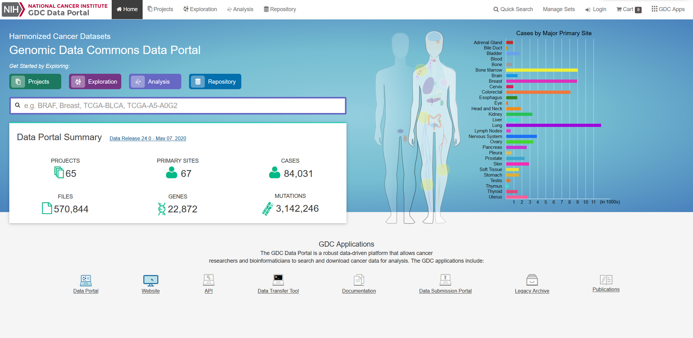

Presented by Noah Inada, Yifei Ning and Siqi Huang
You can view the full report by clicking here
| Background | |
|---|---|
| Gliomas are a type of tumor that occurs in glial cells in the brain or the spinal cord. The glial cells that are most prone to developing gliomas are astrocytes which are specific types of brain cells whose main function is to support neurons. [2] Gliomas that occur from astrocytes are called astrocytomas. Glioblastoma Multiforme, or GBM, is a type of glioma that exhibit more genetic abnormalities than other astrocytomas and are the most aggressive and fatal of gliomas. [3] Gliomas are categorized as high-grade and low-grade. GBM is high grade, and Low-Grade Gliomas (LGG) are low-grade. The causes of GBM are largely unknown, but research suggests that approximately 5 percent of GBM cases are caused by hereditary conditions, with some of the cases being from people with Neurofibromatosis type 1 (NF1), Turcot syndrome and Li-Fraumeni syndrome all being genetic syndromes associated with increased susceptibility to cancer. [4] Because there are multiple syndromes associated with GBM and hereditary causes comprise only a small percentage of the entire affected population, it is difficult to predict whether GBM will occur in an individual or not, and how dangerous they are in those harboring mutations. [5] |
Source: https://www.mayoclinic.org/diseases-conditions/brain-tumor/symptoms-causes/syc-20350084 |
| Abstract | |
|---|---|
|
Source: https://www.mayoclinic.org/diseases-conditions/glioblastoma/cdc-20350148#dialogId52936835 |
The goal of this project is to identify genetic differences between GBM and LGG populations. This is important because these genetic differences may be useful for diagnosing these diseases in people. This was done by comparing each population’s copy number variation focal scores. Our project’s question is: How does copy number variation of GBM and LGG distinguish? Our hypothesis is that the GBM population will have more copy number variation because GBM is more malignant, and so has more genetic mutations.In comparing the focal scores it was found that the GBM population had 1.5 times more duplications and deletions than the LGG population, confirming our hypothesis. And, there were specific sets of outlying genes in the GBM population that distinguish it from the LGG population - but only on a cross-case analysis level. Practically, it is not applicable to use them as markers for diagnosis. This project confirms the hypothesis that GBM has more genetic variation in its copy number variation, but does not support the approach to use copy number variation as a method of diagnosing either disease. We analyze the genetic differences by using the data from The Cancer Genome Atlas (TCGA) which is an online repository of cancer data. To understand how we analyze the genetic differences, we would introduce some important terminology that are helpful. |
| Terminology | |
| Copy Number Variation | The variation of numbers of copies of a gene. This variation occurs from mutations and are categorized as duplications, deletions, or segmental duplication. Cancer cells are typically related to a set of multiple mutated genes, so copy number variation is a good indicator for some diseases like cancers. |
| Focal Scores | Summarize copy number variation. In our data, a score of one indicates a gene duplication, a score of zero indicates that there was no change in copy number, and a score of negative one indicates a gene deletion. |
| Data Overview | |
|---|---|
| Our data is from The Cancer Genome Atlas, which is an online repository of cancer data. It was started by a diverse group of researchers to consolidate and analyze cancer data. Their data portal is called the Genomic Data Commons Data Portal, or, GDC. The GDC has over 84,000 cancer cases spanning across 67 primary cancer sites such as the lung, breast, or brain. In our project we used all of their Glioblastoma Multiforme cases and all of their Low-Grade Glioma cases, which amounted to 617 and 507 cases respectively. In those cases they have both CNV data and clinical data. The clinical data includes gender, when they were diagnosed, and when they passed away, if they passed away. | 
Source: https://portal.gdc.cancer.gov/ |
| Data Ingestion | |
|---|---|
|
Source: https://bioconductor.org/packages/release/bioc/html/TCGAbiolinks.html |
Our data ingestion pipeline consists of three modules: Data, Analysis, and Visualization. Under the Data Module, the filtered data will be downloaded and prepared for the model to digest. In the Analysis Module, the pre-processed data will be fit into our models. Our clinical data was ingested automatically with an R package called TCGAbiolinks. To gather the data, all we need to do is to set a query similar to a SQL query. For our Copy Number Variation, all of the data we needed was stored in one text file, which could just be downloaded directly from the GDC. |
The survival plot presents an estimate of survival probability depending on the days since diagnosis. By using the R package TCGAbiolinks, we are able to use the fields 'days_to_death' and 'vital' of the clinical data from TCGA to create the survival plot we need, where the x-axis is the days since cancer diagnostics and y-axis is the survival probability. The survival plot has a line graph showing the proportion of surviving patients as time goes on, and a chart annotating how many people compose the proportion. The survival plots can help us recognize if there is a large lethality rate between GBM and LGG. |
||
| 2.1.1 Survival Rate Analysis Across Genders | ||
|---|---|---|
| Survival Plot of LGG | Survival Plot of GBM | |
|
Within each population, the survival rates are compared across males and females. As shown above the left image is the survival analysis plot for LGG, and the right image is the analysis plot for GBM. Comparing the graphs, numbers of populations with GBM and LGG tend to decline at an increasing rate as time passes. Such a declining trend also holds for both males and females. For the population with LGG, their survival probability varies much more in the latter days and the declining trend is much more smooth with a larger variance. Visually, the males and females in the population develop a similar pattern: no significant differences across gender. On the other hand, the GBM survival plot shows a much more aggressive declining trend. As for different genders in the population with GBM, females tend to have a higher probability of survival than the males in the population, with respect to the whole range of days. Conclusively, GBM appears to be more lethal - there is a much steeper decline in survival probability within just the first 1,000 days. After 1,00 days, both male and female people who have GBM have less than a .25 probability of survival, while male and female people in the LGG population have above a .75 probability at 1,000 days. Also, per the annotation chart, there are no survivors after 4000 days (11 years), but there are still 12 LGG patients living. |
||
| 2.1.2 Survival Rate Analysis Across Ethnicities | ||
| Survival Plot of LGG | Survival Plot of GBM | |
|
A similar comparison across ethnicities. Three categories of ethnicities are compared: 'hispanic or latino', 'not hipanic or latino', and 'not reported'. In the survival plot for GBM, the numbers of cases are small for the group 'hispanic or latino' (13s) and the group 'not reported' (93). Most cases belong to 'not hispanic or latino'. It is not appropriate to draw conclusions from limited numbers of cases, and thus we should only consider the general trend. The 'hispanic or latino' and 'not hipanic or latino' groups are somewhat different, their differences are not significant as the p-value equals 0.64. In the survival plot for LGG, the number of cases are limited for the group 'hispanic and latino' and the group 'not reported'. It is not persuasive enough to draw conclusions about these two groups. The general pattern of the 'not hispanic or latino' population is the same as in the previous plot. Conclusively, regardless of the ethnicity, the survival probability plot for either GBM or LGG follows the general pattern in section 4.1, which is that the survival rate decreases at an increasing rate as time goes by. The decreasing rate is much larger in GBM than in LGG, confirming our background research. |
||
A CNV focal score is a value between negative one and one that indicates if the gene was deleted or copied. A negative one means it was deleted, a zero means nothing changed, and a one means it was copied. Because these scores are calculated across many samples, decimal values are an indicator of ‘what usually happens’. When our data file was generated, a noise-cutoff of .3 was used, meaning that values less than -.3 are classified as -1, values between -.3 and .3 are classified as 0, and values above .3 are classified as 1. |
|
| In our exploratory data analysis, the first things were noticed were the GBM vertical lines of duplications and deletions. We also noticed that there were many deletions in both GBM and LGG to the right side of the graphs. We look more into these observations in our analysis. | |
Our analysis is of our focal score proportion plots. We summarized the focal score plots for our analysis by finding the proportion of cases of duplications and deletions for each gene and plotting both lists of proportions. By doing so, the number of cases in a gene where there is copy number variance can be easily compared with other genes. To interpret the plot: the higher a blue dot is, the more the gene was duplicated across the cases, and the lower a red dot is, the more the gene was deleted. Furthermore, we used cytoband data included in the focal scores file to delineate which genes belong to which chromosomes. |
|
| 3.1 Focal Score Proportions | |
|---|---|
| The above are the focal score proportions of GBM on the left and LGG on the right. Those GBM outliers distinguish it from LGG. The two significant outliers of our project are at gene indices 7,290 and 8,669 for the GBM population, indicated by blue and red arrows. These genes have symbols of ENSG00000146648 and ENSG00000264545 respectively, and are aliased EGFR and PNP_UDP_1 Domain-Containing Protein. EGFR is an epidermal growth factor receptor, and the other gene is involved in transferase activity and transferring pentosyl groups. [6][7] | |
| 3.2 Zoomed Focal Score Proportions | |
| The above is a further zoomed view. The GBM population still has outliers of genes. | |
| 3.3 Delineated Focal Score Proportions | |
|
The above graphs includes lines from the cytoband data where a new chromosome begins to delineate the chromosomes. Where a new chromosome begins, there is often a fall in proportions. This seems to show that duplications and deletions will span across genes but not into the successive chromosome. The GBM population has about 7.8 duplicates per gene and 14.9 deletions per gene, while the LGG population has about 5.2 duplications per gene and 9.3 deletions per gene. The GBM population has 1.5x more duplications and deletions than the LGG population. | |
| The GBM population does have more copy number variation than the LGG population, which confirms our hypothesis. Genes ENSG0000026454 and ENSG00000146648 might potentially be useful for distinguishing GBM from LGG, fulfilling our project's goal of finding distinguishing outliers, but because their proportion difference is only .01 from the other genes, they may not be significant enough to be used in practice. | |
2.https://www.mayoclinic.org/diseases-conditions/glioma/symptoms-causes/syc-20350251
3.https://www.ncbi.nlm.nih.gov/pmc/articles/PMC5563115/
4.https://www.ncbi.nlm.nih.gov/pmc/articles/PMC2940552/
5.https://www.ncbi.nlm.nih.gov/pmc/articles/PMC2761018/
6.http://uswest.ensembl.org/Homo_sapiens/Gene/Summary?g=ENSG00000146648;r=7:55019021-55211628
7.https://www.genecards.org/cgi-bin/carddisp.pl?gene=ENSG00000264545